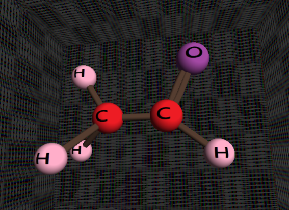

面向物质结构三维建模的计算机辅助设计
预览

演示视频(Dropbox)
使用说明
- 开始界面点击start开始建模，点击quit可以退出程序；进入建模界面之后，初始状态在绘制场景中有两个单键连接的原子，用户可以选择在此基础上建模，也可以选择清空屏幕之后从头开始建模；
- 点击鼠标右键，出现一个右键菜单，分别为清空屏幕、添加一个原子、添加单键、改变原子大小、改变原子贴图以及zoom in/out，在界面右侧还有一个侧边栏，实现截图，退出建模的功能；在建模过程中，可以通过鼠标拖动来在不同视角观察建模分子，也可以通过鼠标左键单击选中原子，拖动原子位置。
- 在建模过程中，可以通过IJKL按键调整光源位置以及WASD按键调整视角位置，F按键可以实现对当前建模分子的截屏。
功能界定
基于OpenGL与C++开发的面向物质结构建模的三维CAD软件，可以实现
- 对物质结构球棒模型的搭建与拼接
- 球棒材质的变换与光线的转换
- 球棒大小、位置的自由控制
- 三维全方位物质几何结构观察(鼠标拖拉)
- 视角漫游(Zoom In / Zoom Out)
- 几何模型OBJ文件导出保存与导入
- 实时应用窗口的截屏
高级要求
- NURBS曲面建模实现元素间双键的连接
软管道的中心线为NURBS曲线，利用反馈模式得到坐标，结合向量间夹角计算，利用短圆柱拼接实现
- 友好的UI交互
利用GLUT维护的右键菜单，以及独立实现的侧边栏
- 复杂材质
通过鼠标拾取，左键选择对象，右键菜单切换不同材质(本项目用图为太阳系图)
- 碰撞检测
- 对象表达能力(球棒模型拼接，可以实现包括金刚石模型在内的三维仿真)
利用深度、视角等信息实现不同物体前后间的遮挡以进一步形成组合体
代码
- 项目代码在这里